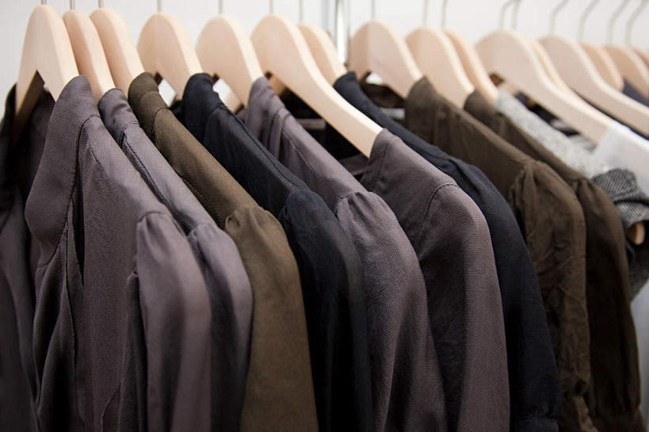
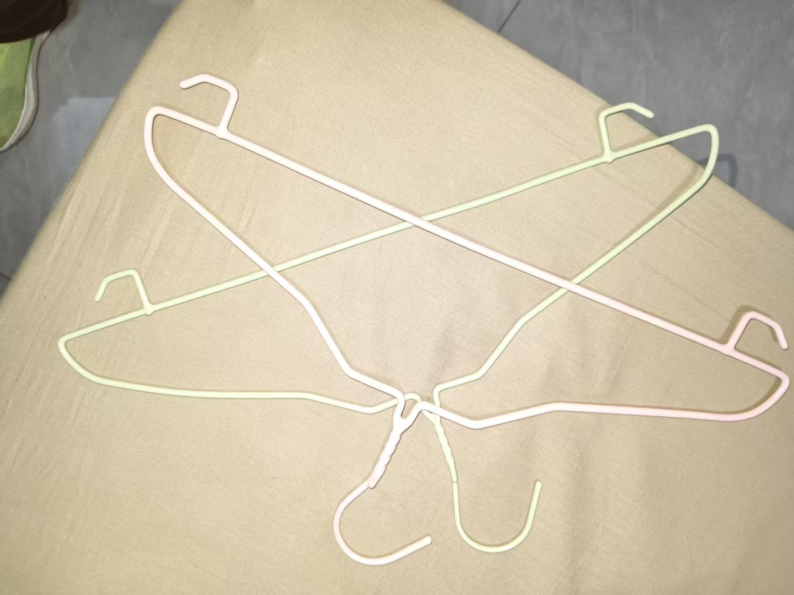
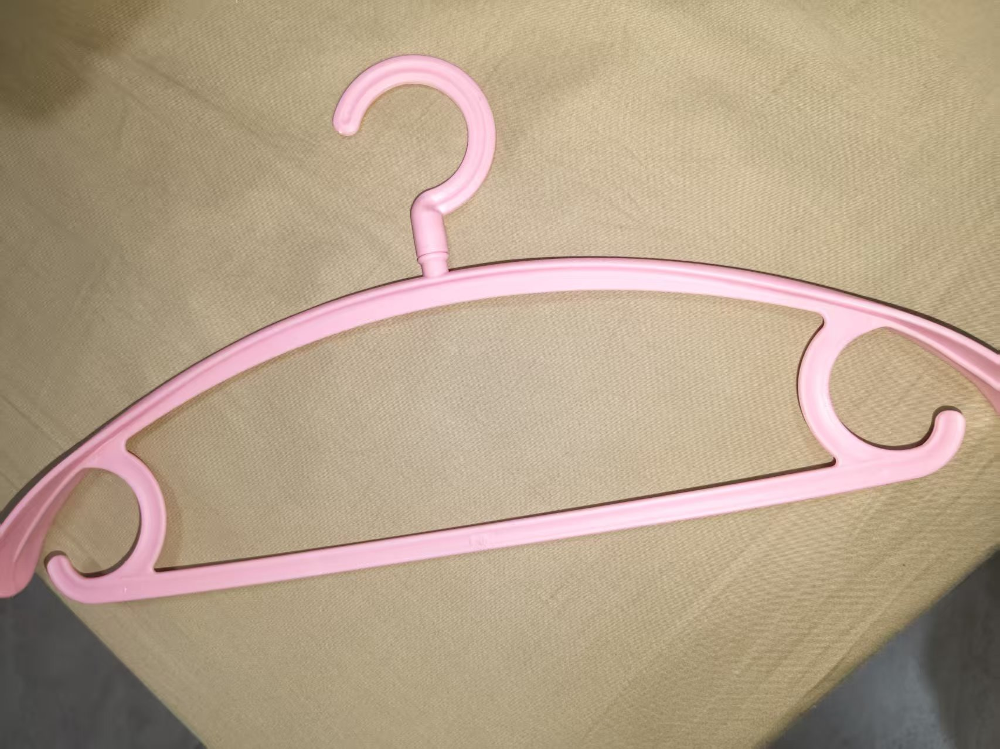
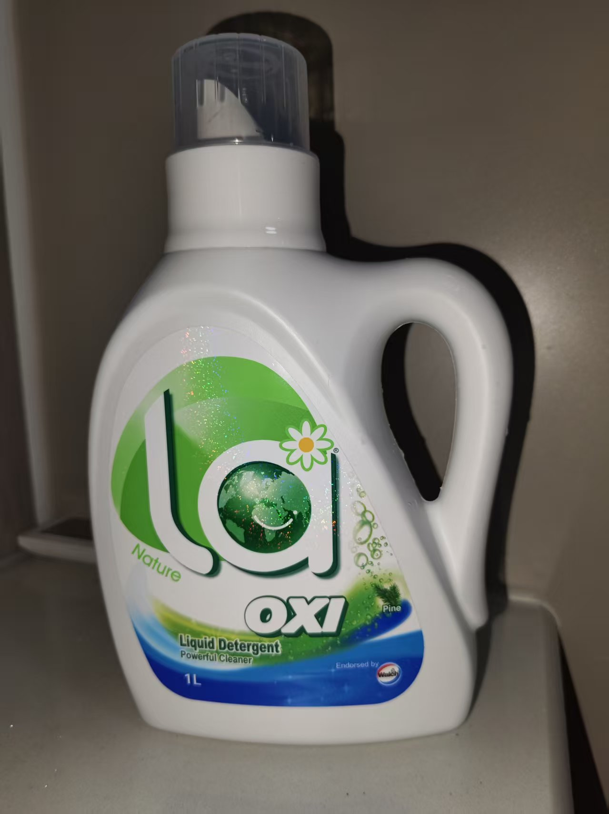
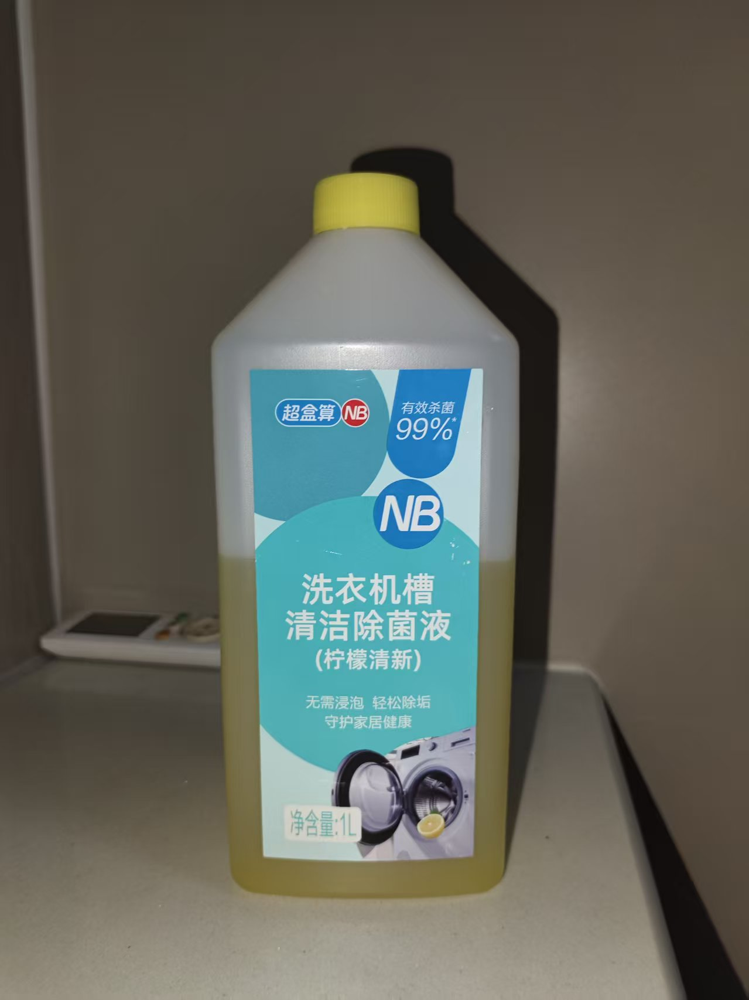
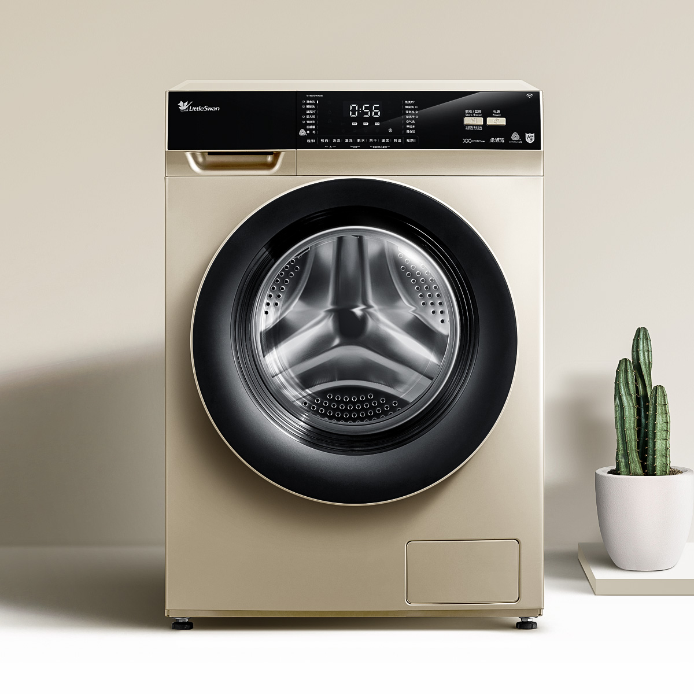

衣物类
这里详细介绍衣物类用品的名称、用途和特点，帮助你更好地了解和使用它们。

衣服
包括上衣、裤子、裙子、外套等各类服装，根据季节和场合选择合适的款式。

普通衣架
塑料衣架，用于悬挂和整理衣物。共有20个，双色各十个。

承重衣架
用于悬挂较重的衣物，如外套、大衣等。共有10个。

洗衣液
手洗专用、机洗专用、顽固污渍专用等不同类型，根据衣物材质和污渍类型选择。

消毒液
衣物专用、家居通用等类型，用于杀菌消毒，保持衣物清洁卫生。

洗衣机
波轮、滚筒、迷你洗衣机等不同类型，根据家庭需求和空间大小选择。